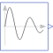
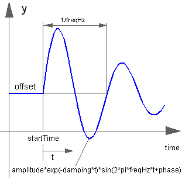

ExpSineGenerate exponentially damped sine signal |

|
Information
This information is part of the Modelica Standard Library maintained by the Modelica Association.
The Real output y is a sine signal with exponentially changing amplitude:

Parameters (6)
| offset |
Value: 0 Type: Real Description: Offset of output signal y |
|---|---|
| startTime |
Value: 0 Type: Time (s) Description: Output y = offset for time < startTime |
| amplitude |
Value: 1 Type: Real Description: Amplitude of sine wave |
| freqHz |
Value: Type: Frequency (Hz) Description: Frequency of sine wave |
| phase |
Value: 0 Type: Angle (rad) Description: Phase of sine wave |
| damping |
Value: Type: Damping (s⁻¹) Description: Damping coefficient of sine wave |
Connectors (1)
| y |
Type: RealOutput Description: Connector of Real output signal |
|---|